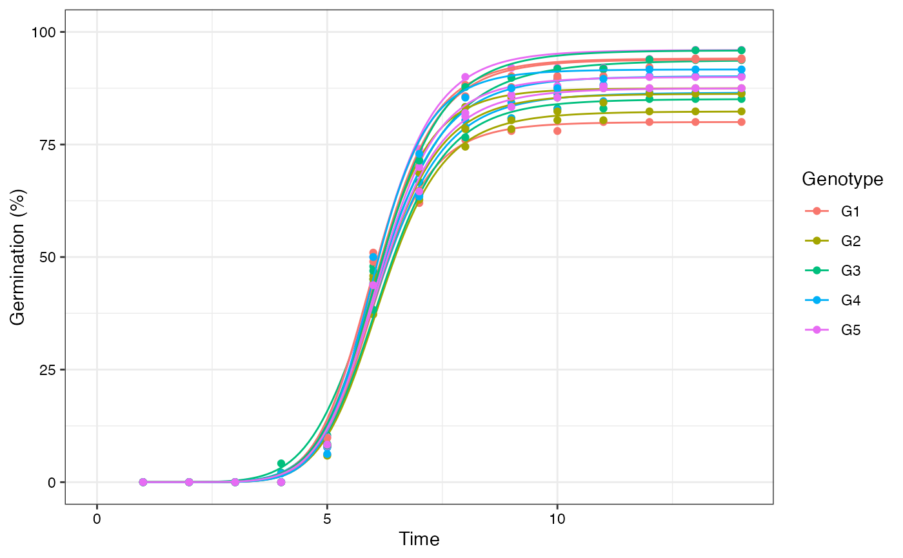
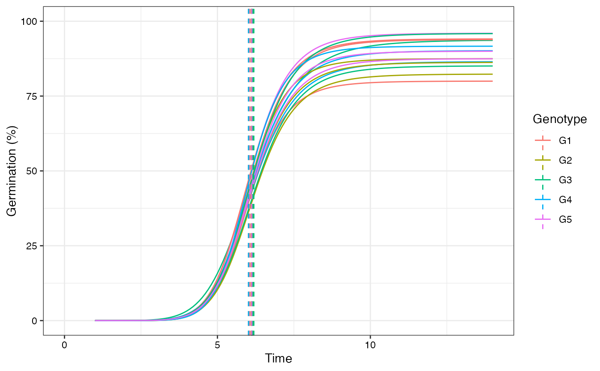
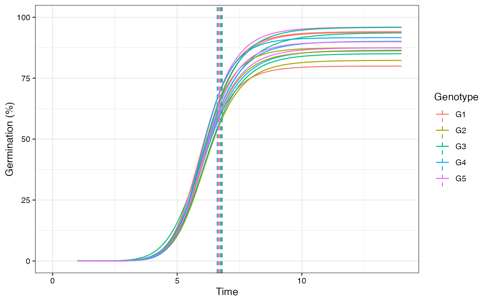
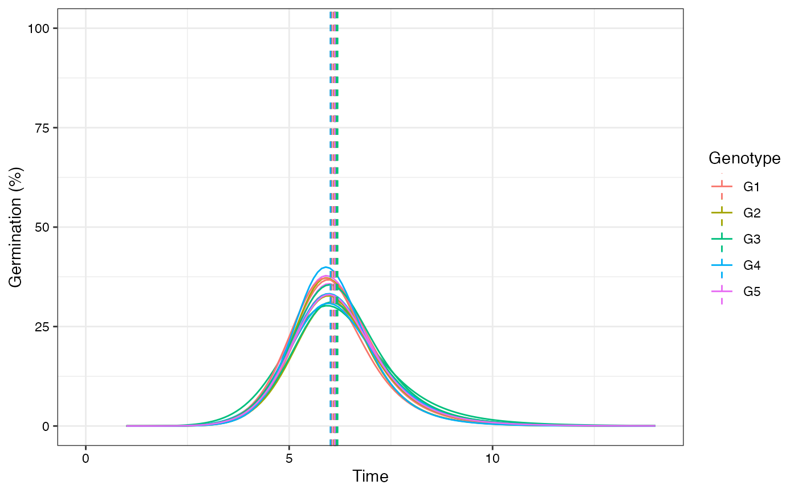
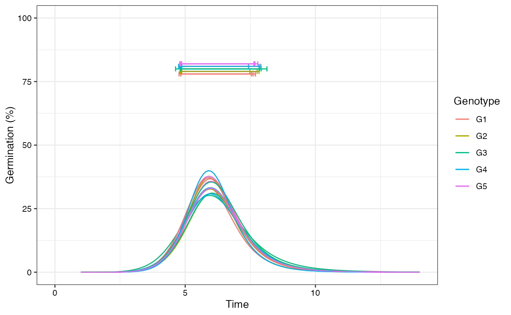
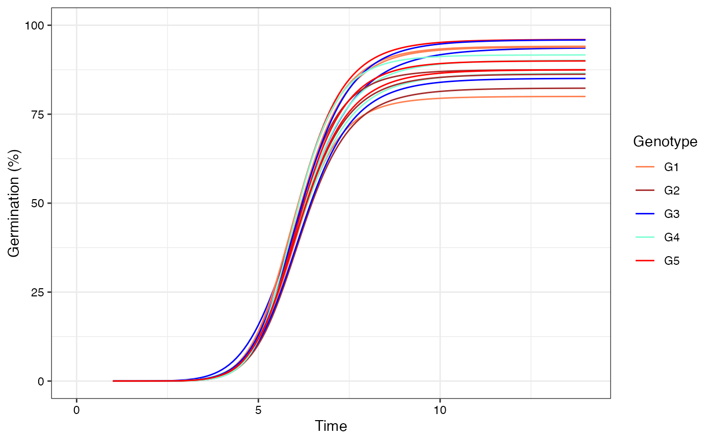
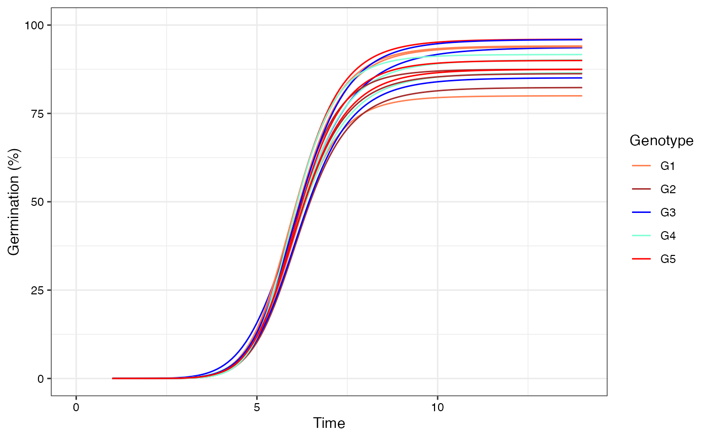

Plot the multiple four-parameter hill function fitted cumulative germination curves from a FourPHFfit.bulk object
Source: R/plot.FourPHFfit.bulk.R
plot.FourPHFfit.bulk.Rdplot.FourPHFfit plots multiple four-parameter hill function fitted
cumulative germination curves (FPHF curves) or the rate of germination
curves (RoG curves) from a FourPHFfit.bulk object as an object of
class ggplot. Further, either one of the parameters such as time
required for 50% of total seeds to germinate
(\(\textrm{t}_{\textrm{50}_\textrm{Total}}\)), time required for 50% of
viable/germinated seeds to germinate
(\(\textrm{t}_{\textrm{50}_\textrm{Germ}}\)), Time at Maximum
Germination Rate (TMGR), Mean Germination Time (MGT), or uniformity value
(\(\textrm{U}_{\textrm{t}_{\textrm{max}}-\textrm{t}_{\textrm{min}}}\))
can also be annotated in the plot as specified in the annotate
argument.
Arguments
- x
An data frame object of class
FourPHFfit.bulkobtained as output from theFourPHFfit.bulkfunction.- rog
If
TRUE, plots the Rate of Germination curves (RoG) instead of the Four-Parameter Hill Function fitted cumulative germination curves (FPHF). Default isFALSE.- annotate
The parameter to be annotated in the plot. Either
"t50.total"(\(\textrm{t}_{\textrm{50}_\textrm{Total}}\)),"t50.germ"(\(\textrm{t}_{\textrm{50}_\textrm{Germ}}\)),"tmgr"(TMGR),"mgt"(MGT), or"uniformity"(\(\textrm{U}_{\textrm{t}_{\textrm{max}}-\textrm{t}_{\textrm{min}}}\)). All the parameters are annotated as vertical lines, except for (\(\textrm{U}_{\textrm{t}_{\textrm{max}}-\textrm{t}_{\textrm{min}}}\)), which is annotated as horizontal lines.- limits
logical. If
TRUE, set the limits of y axis (germination percentage) between 0 and 100 in the germination curve plot. IfFALSE, limits are set according to the data. Default isTRUE.- group.col
The names of the column in data frame
xaccording to which grouping has to be done.- show.points
logical. If
TRUE, shows the original data points (only for the FPHF curve). Default isTRUE.- ...
Default plot arguments.
Examples
# \donttest{
data(gcdata)
counts.per.intervals <- c("Day01", "Day02", "Day03", "Day04", "Day05",
"Day06", "Day07", "Day08", "Day09", "Day10",
"Day11", "Day12", "Day13", "Day14")
fits <- FourPHFfit.bulk(gcdata, total.seeds.col = "Total Seeds",
counts.intervals.cols = counts.per.intervals,
intervals = 1:14, partial = TRUE,
fix.y0 = TRUE, fix.a = TRUE, xp = c(10, 60),
tmax = 20, tries = 3, umax = 90, umin = 10)
# Plot FPHF curves
plot(fits, group.col = "Genotype")
# Plot ROG curves
plot(fits, rog = TRUE, group.col = "Genotype")
# Plot FPHF curves with points
plot(fits, group.col = "Genotype", show.points = TRUE)

# Plot FPHF curves with annotations
plot(fits, group.col = "Genotype", annotate = "t50.total")
plot(fits, group.col = "Genotype", annotate = "t50.germ")

plot(fits, group.col = "Genotype", annotate = "tmgr")
plot(fits, group.col = "Genotype", annotate = "mgt")

plot(fits, group.col = "Genotype", annotate = "uniformity")
# Plot ROG curves with annotations
plot(fits, rog = TRUE, group.col = "Genotype", annotate = "t50.total")
plot(fits, rog = TRUE, group.col = "Genotype", annotate = "t50.germ")

plot(fits, rog = TRUE, group.col = "Genotype", annotate = "tmgr")
plot(fits, rog = TRUE, group.col = "Genotype", annotate = "mgt")
plot(fits, rog = TRUE, group.col = "Genotype", annotate = "uniformity")

# Change colour of curves using ggplot2 options
library(ggplot2)
curvesplot <- plot(fits, group.col = "Genotype")
# 'Dark2' palette from RColorBrewer
curvesplot + scale_colour_brewer(palette = "Dark2")
 # Manual colours
curvesplot +
scale_colour_manual(values = c("Coral", "Brown", "Blue",
"Aquamarine", "Red"))

# }
# Manual colours
curvesplot +
scale_colour_manual(values = c("Coral", "Brown", "Blue",
"Aquamarine", "Red"))

# }